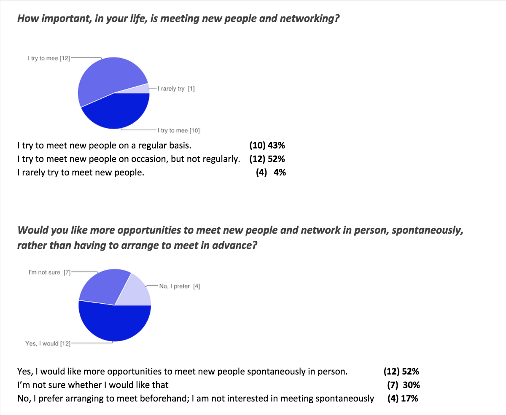
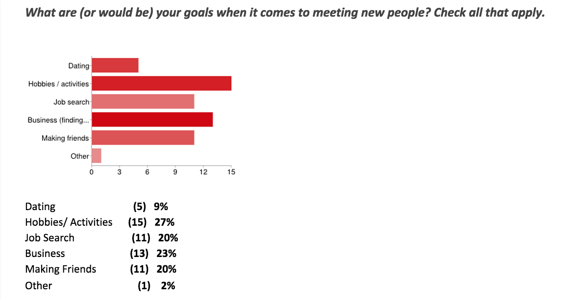
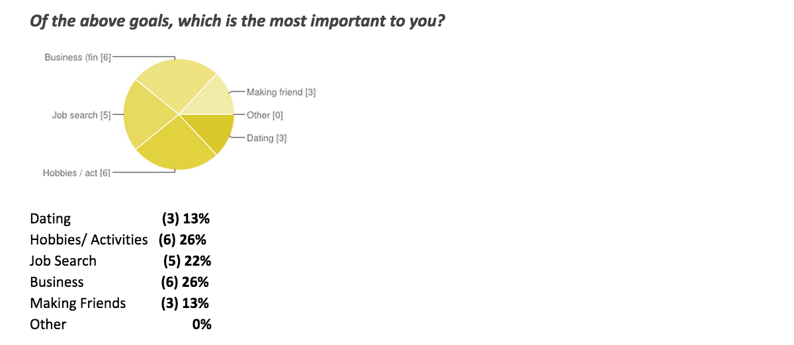

Meetbot - An innovative app for social interaction
DemoMeetbot will make it possible to connect with people who have a mutual interest in meeting you for a desired social goal they wish to accomplish. Essentially you decide what social goals you want to accomplish and instead of searching for the right person online, the person finds you in while you are going about your normal routine.
Problem Space and Requirements Gathering
Currently there are many different ways to socially interact and accomplish social goals using various applications through computers and mobile devices. Some of the most common ways people may want to socially interact are for: business, dating, friendships , hobbies and for various other common interests. Almost all of these goals require the user to sign into an account and go through a long and drawn out screening process, in order to setup a time or date to meet. Only after this drawn out process can you meet in person and find out if you have a mutually beneficial relationship. This wastes a lot of time, money and can be emotionally draining. Therefore, we define that our project will serve as a way to more efficiently bring people together, with similar social interaction goals, on the spot. It will help them to accomplish these goals by serving as the “middle man” and will make this process enjoyable with less planning and preliminary efforts for the user.
We created a questionnaire to help us form user requirements for our product. We had a total of 24 responses.
Most influential requirement responses to help shape our design:1. Almost all respondents wanted to meet new people either occasionally or on a regular basis.2. Would like to mostly use for business, job seeking and finding people with similar interests 3. They would like to meet new people spontaneously and in person.
Interesting and influential responses (analytics):
  Design(Conceptualization)
1.User signs up for an account by providing basic information (information that all areas of the application use regardless of goals/ context).2. User Specifies what types of things they are searching for (ie: Job search, Business partners, Dating, people with similar hobbies/ interests etc.)3. App asks for relevant information in respect to what they are searching for. 4. User specifies what goals they want to accomplish.5. Users are given the option of GPS or Check-in feature (like Foursquare) to begin the virtual visible interaction mode via their mobile device. 6. When people are visibile and within proximity of each other they have the opportunity to interact with each other given that they have complementary goals. (example: Searching for Job 1 and Searching for Applicant for Job 1). 7. Both parties are signaled via notification on their mobile devices. They both have the opportunity to review the details of the person they are having the interaction with. (They could also quickly accept)8. Once both parties accept the interaction request they are given the opportunity to meet in the physical space that they are both located in by given a chat window to text each other where in the physical space they would like to meet. 9. They meet.10. After the meeting they have the opportunity to exchange pre-loaded information via the application. 11. They are also given the opportunity to rate the validity of the other party. (positive or negative)Sidenote: User builds an easy to use history and a list of contact information automatically
Validation(Product Assessment)
We conducted usability evaluations with the help of six evaluators, among them graduate students in the School of Informatics as well as industry professionals. Evaluators were asked to complete a set of scenario-based tasks and fill out a post-task questionnaire. We also conducted an open-ended interview where we asked evaluators to give us their thoughts and comments on the interface design, concept presentation, and workflow of the app.We chose the tasks based on our primary scenario of a job seeker using the app to connect with an employer, to best evaluate the core of the MeetBot use experience.